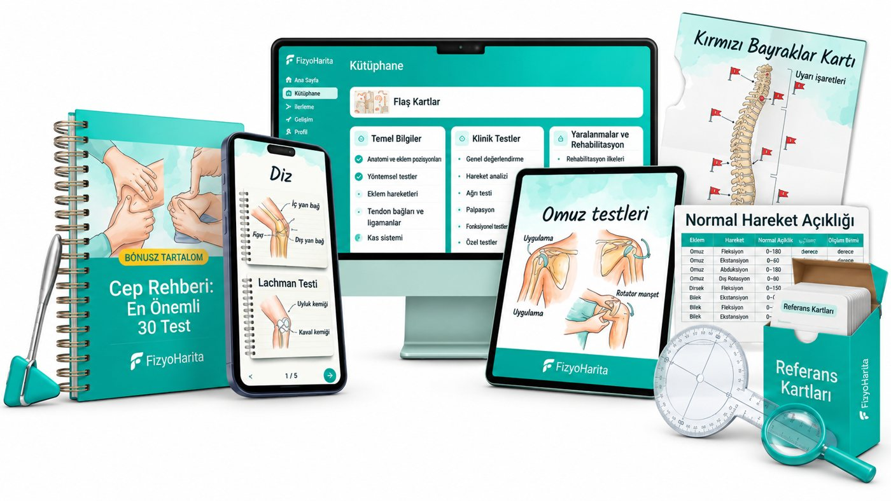
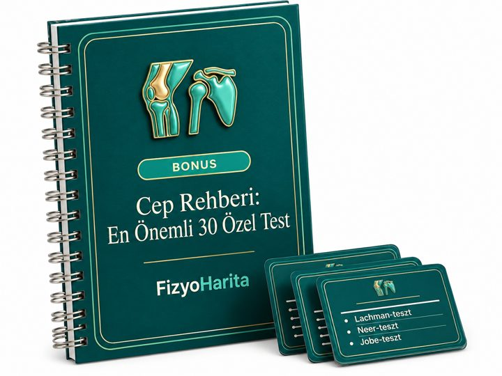
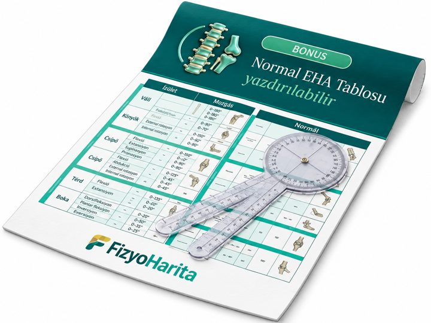
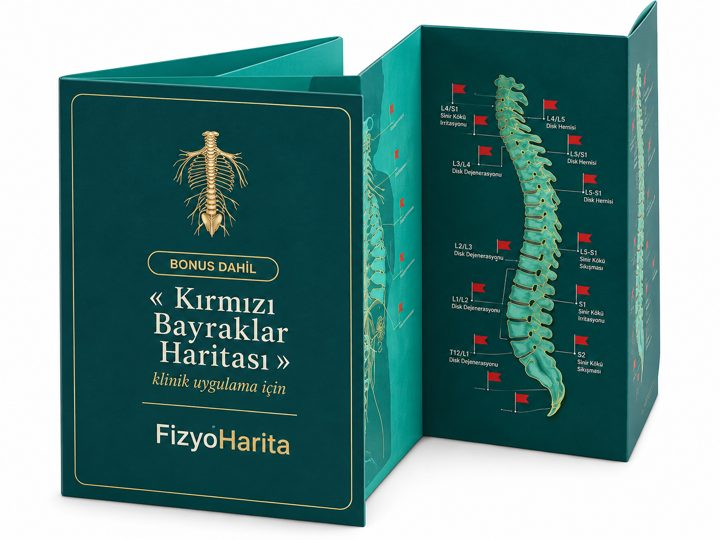

FizyoHarita · Değerlendirmeden Rehabilitasyona 54 Konu ve 160+ Sayfa Görsel Harita · 3 Hediye Bonus
Değerlendirmeden rehabilitasyona fizyoterapi, görsel haritalar ve gerçekten akılda kalan tekrarlarla. Uygulamayı telefondan ve bilgisayardan istediğiniz zaman bu sayfadan açabilirsiniz.

Görsel haritalarla 54 konu, her test ve tablo için bilgi kartı, her sayfada 2 kontrol sorusu, hafıza modu (Leitner sistemi), 3 seviye (Temel, Orta, Klinik), seriler, puanlar, hâkimiyet ve rozetler.
Uygulamayı aç › 📄PDF sürümü (indir ve yazdır)54 konunun tamamı, 201 sayfa: görsel haritalar, bilgi kartları, klinik özetler, kontrol soruları ve sonda açıklamalı cevaplar.
PDF’i aç · 22.4 MB3 hediye bonus

Sınavlarda ve klinik uygulamada en sık karşılaşılan 30 özel test: uygulama, pozitif bulgunun anlamı ve değerlendirilen yapı. Cep boyu (A6).
PDF’i aç / kaydet · 33 sayfa · 0.4 MB
Omuzdan ayak bileğine tüm eklemler için referans değerler; sağ ve sol ölçümlerinizi yazabileceğiniz alanlarla (A4, 2 sayfa).
PDF’i aç / kaydet · 2 sayfa · 0.2 MB
Ağrının mekanik olmadığını ve hekim değerlendirmesi gerekebileceğini gösteren işaretler, bölgelere göre tek sayfada (yatay A4).
PDF’i aç / kaydet · 1 sayfa · 0.1 MBNasıl başlanır
- Uygulamayı ana ekrana ekleyinUygulamayı açın, ardından tarayıcının paylaş menüsünden «Ana Ekrana Ekle» seçeneğini seçin. Bir dahaki sefere tek dokunuşla açılır.
- 1. konuyla başlayın ve 2 soruyu cevaplayınHer konu 3 sayfadır (görsel harita, bilgi kartı, klinik özet) ve her birinin sonunda 2 soru vardır.
- Günde bir kez hafıza moduYanlış cevaplar ertesi gün, bildikleriniz ise giderek artan aralıklarla otomatik olarak geri gelir.
- Bonusları yazdırınCep rehberini önlüğünüzün cebine, eklem hareket açıklığı tablosunu ve kırmızı bayrakları tedavi masasının yanına.
Bugün uygulamada 1. konuyu («Düzlemler ve Eksenler») açın ve ilk 2 soruyu cevaplayın. Bir konuyu 10 dakikada bitirirsiniz.
Fizyoterapi öğrencileri ve fizyoterapistler için öğrenme ve başvuru materyalidir. Yetkin bir sağlık profesyonelinin muayenesinin yerini tutmaz. İlerlemeniz kullandığınız cihazın tarayıcısında saklanır (her cihazda ayrı).